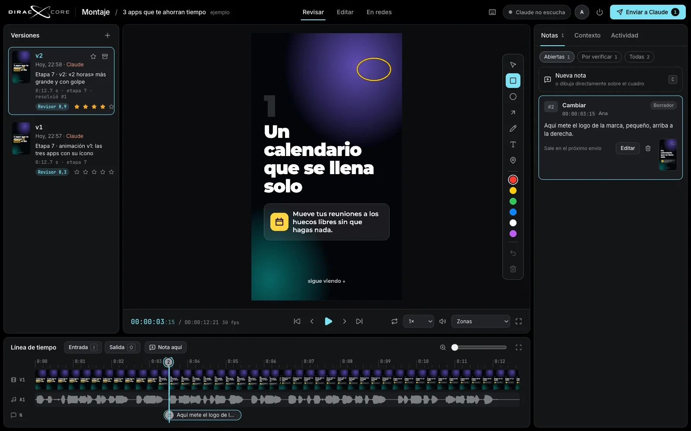
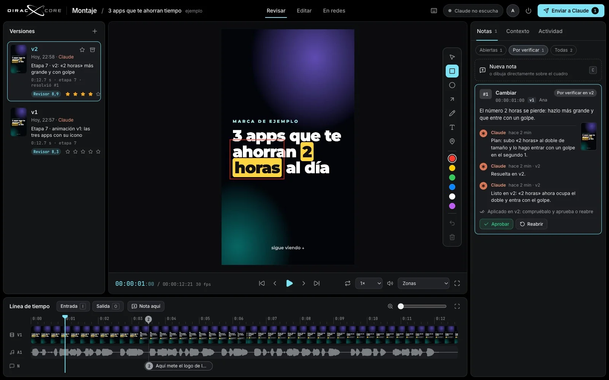
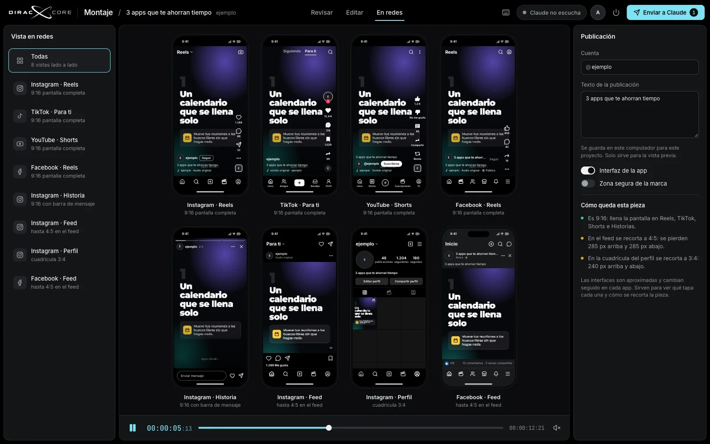
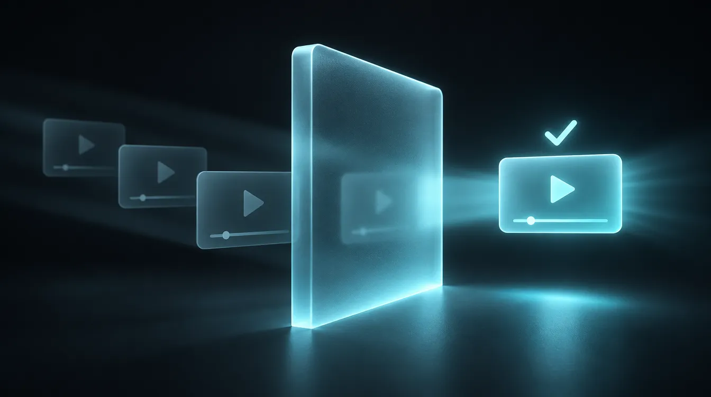

Creator OS
by Dirac Core · free and open sourceby Dirac Core · gratis y de código abierto
Your AI content team. You approve every step.Tu equipo de contenido con IA. Tú apruebas cada paso.
Tell your AI what you want to post. It finds the idea, writes the script, edits the reel and learns what your audience likes. Nothing gets published without your yes.Dile a tu IA qué quieres publicar. Encuentra la idea, escribe el guion, edita el reel y aprende qué le gusta a tu público. Nada se publica sin tu sí.
Four phases, one step at a timeCuatro fases, un paso a la vez
You install it once and set up your brand once. Then you make reels as often as you want, and every week it gets a little better.Lo instalas una vez y preparas tu marca una vez. Después haces reels cuando quieras, y cada semana sale un poco mejor.
One plugin, and Claude Code installs it.Un plugin, y Claude Code lo instala.
once · a few minutesuna vez · unos minutos 2Set up your brandPrepara tu marcaWhat you talk about, and to whom.De qué hablas, y a quién.
onceuna vez 3Make your reelHaz tu reelFrom the idea to publishing it.De la idea a publicarlo.
every reelcada reel 4GrowCreceLearn what worked and repeat it.Aprende qué funcionó y repítelo.
every weekcada semanaLost at any point? Just ask your AI.¿Te perdiste en algún momento? Pregúntale a tu IA. It knows where you are and tells you the next step. Below you have every step ready anyway, in order.Sabe en qué vas y te dice el siguiente paso. Igual, aquí abajo tienes cada paso listo, en orden.
Your editor: MontageTu editor: Montaje
Every video the AI makes lands here as a new version. It runs on your computer, so nothing gets uploaded anywhere. You open it with /creator-montage. Free, it comes with Creator OS.Cada video que hace la IA llega aquí como una versión nueva. Corre en tu computador: no se sube nada a ningún lado. Lo abres con /creator-montage. Gratis, viene con Creator OS.



Works with the whole team:Sirve para todo el equipo: every person signs their notes.cada persona firma sus notas.The final version:La versión final: only you mark it.solo tú la marcas.
What it uses, and what it costsQué usa, y qué cuesta
Creator OS is free. What's paid is optional, and it's never used without telling you the price and waiting for your yes.Creator OS es gratis. Lo que es de pago es opcional, y nunca se usa sin decirte el precio y esperar tu sí.
The AI can't hear, so it measures.La IA no oye, así que mide. It studies how your niche sounds, measures every effect against your voice in the final mix and checks word by word (with Whisper) that no sound covers what you say. You approve it by ear.Estudia cómo suena tu nicho, mide cada efecto contra tu voz en la mezcla final y revisa palabra por palabra (con Whisper) que ningún sonido tape lo que dices. Tú lo apruebas de oído.
All of it, on one cardTodo, en una sola tarjeta
Tap any command to copy it. And remember: you can always just ask your AI “what's next?”.Toca cualquier comando para copiarlo. Y recuerda: siempre puedes preguntarle a tu IA «¿qué sigue?».
Nothing reaches you half doneNada te llega a medias
Before you see a video, it gets checked like a picky editor would, and scored by a second AI that didn't make it. Only what scores 8 out of 10 or more reaches you.Antes de que veas un video, se revisa como lo haría un editor exigente, y lo califica una segunda IA que no lo hizo. Solo te llega lo que saca 8 de 10 o más.

The whole video, every cut and your face up close, and checks that every word is clear.El video entero, cada corte y tu cara de cerca, y comprueba que cada palabra se entienda.
And if it can't get there in two tries, it stops and asks you instead of guessing.Y si en dos intentos no llega, se detiene y te pregunta en vez de adivinar.
Every correction you make becomes a lesson, so the same mistake doesn't come back.Cada corrección tuya se vuelve una lección, para que el mismo error no vuelva.
QuestionsPreguntas
Do I need to know how to code?¿Necesito saber programar?
What does it cost?¿Cuánto cuesta?
Which AI do I need?¿Qué IA necesito?
Do I have to appear on camera?¿Tengo que salir en cámara?
Will it post on its own?¿Publica por su cuenta?
Does it work on Windows?¿Funciona en Windows?
Found it useful?¿Te sirvió?
A star on GitHub is the like of code. It helps more creators find it.Una estrella en GitHub es el like del código. Así más creadores lo encuentran.